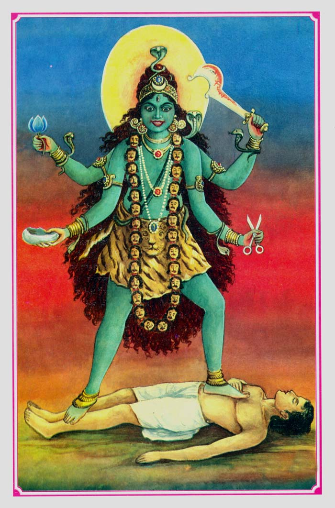
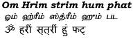
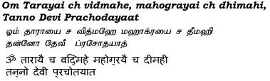

|
|||||
lordess sakthi
DASA MAHA VIDHYA
Tara
|
 |
|
Tara is the second Mahavidya and also the second patron deity of Kali Kula Shaktism. Tara is described as seated in the pratyalidha asana, on the heart of a corpse, supreme, laughing horribly, holding cleaver, blue lotus, dagger and bowl, uttering the mantra Hum, coloured blue, her hair braided with serpents, the Ugratara.She is the bestows all supernatural powers.The legend begins with the churning of the ocean between the Devas (Hindu Gods) and Asuras (Hindu Demons). The Deva Shiva drank the poison that was created from the churning of the ocean (in the process turning his throat blue and earning him the epithet Nilakantha), thus saving the world from destruction, but fell unconscious under its powerful effect. Tara Ma appeared and took Shiva on her lap. She suckled him, the milk from her breasts counteracting the poison, and he recovered. This story is reminiscent of the one in which Shiva stops the rampaging Kali by becoming an infant. Seeing the child, Kali's maternal instinct comes to the fore, and she becomes quiet and nurses the infant Shiva. In both cases, Shiva assumes the position of an infant.Favourite of ascetics and hermits, Tara is often identified with Kali due to their almost identical iconographies and is considered to be Vama Kali herself. Besides this, Tara is also worshiped by Buddhist Tantiks. Tara is also patron of Bengali Tantric saint Bamakhepa (Vamadev). Tara too has various forms such as Neelasarasvati, Ugra Tara, Smashana Tara, Shanta Tara, Adya Devi and Aparajita.Tara represents the protector aspect of Parvati. Her consort is Akshobya. |
|
Beeja Mantra  Gayatri  |